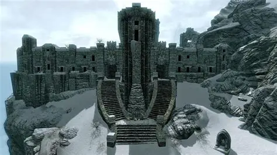
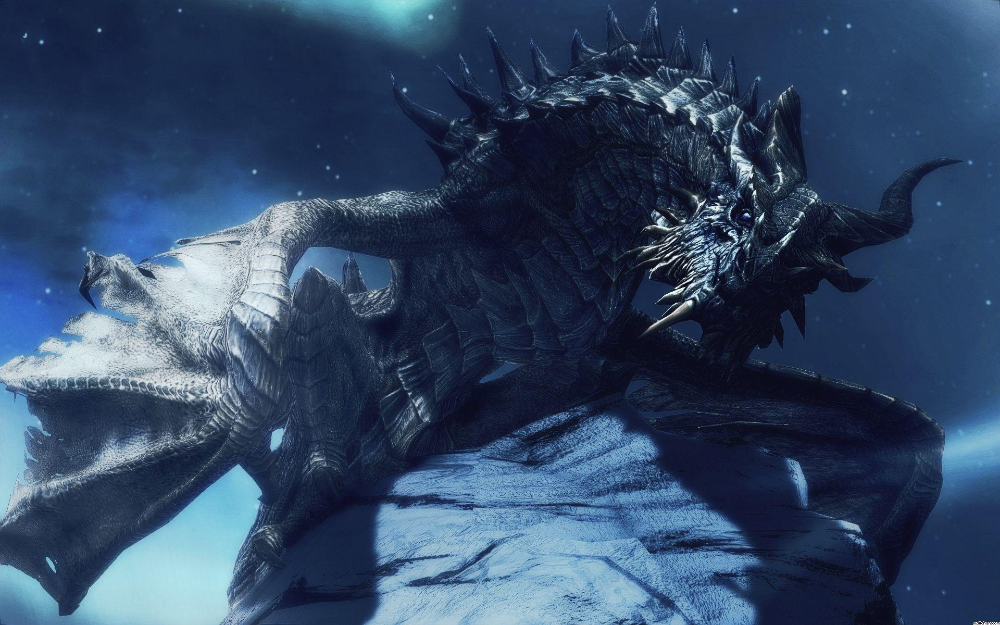

The Greybeards
The Greybeards are a reclusive order of monks who devote their lives to mastering the Voice — the Thu'um. They reside atop High Hrothgar, on the Throat of the World, living in silence and meditation.
Their leader is Paarthurnax, an ancient dragon who turned against Alduin and taught mortals how to use the Voice for defense rather than domination. The Greybeards believe that the Dragonborn is destined not for war, but for spiritual balance.
They refuse to take part in mortal conflicts and strongly oppose the Blades’ desire to kill Paarthurnax. Their teachings emphasize peace, restraint, and mastery over one’s own voice and soul.

High Hrothgar — the sanctuary of the Voice.

Paarthurnax — ancient dragon, mentor of the Dragonborn.